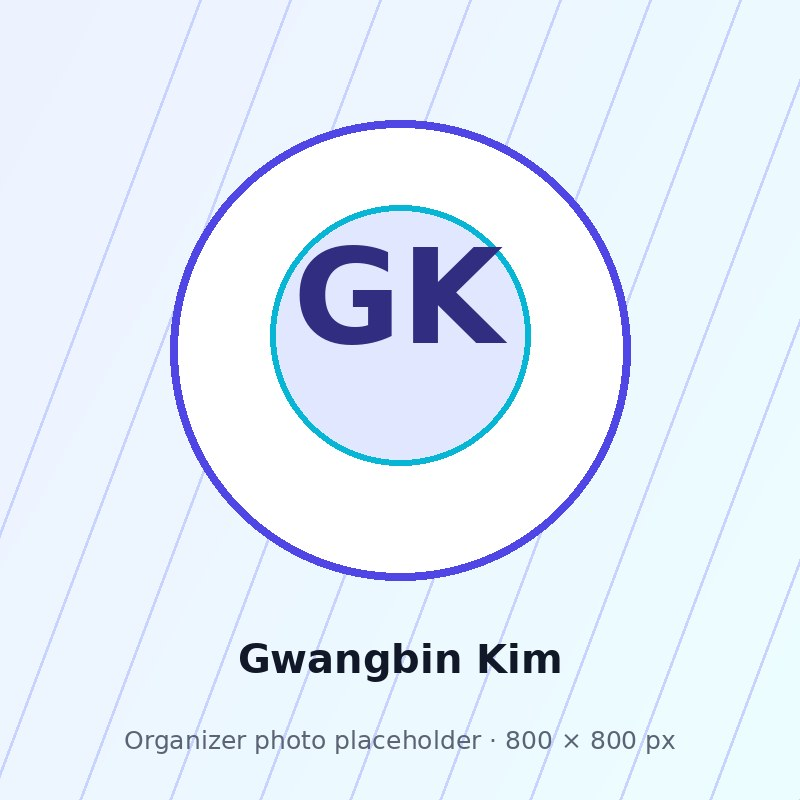
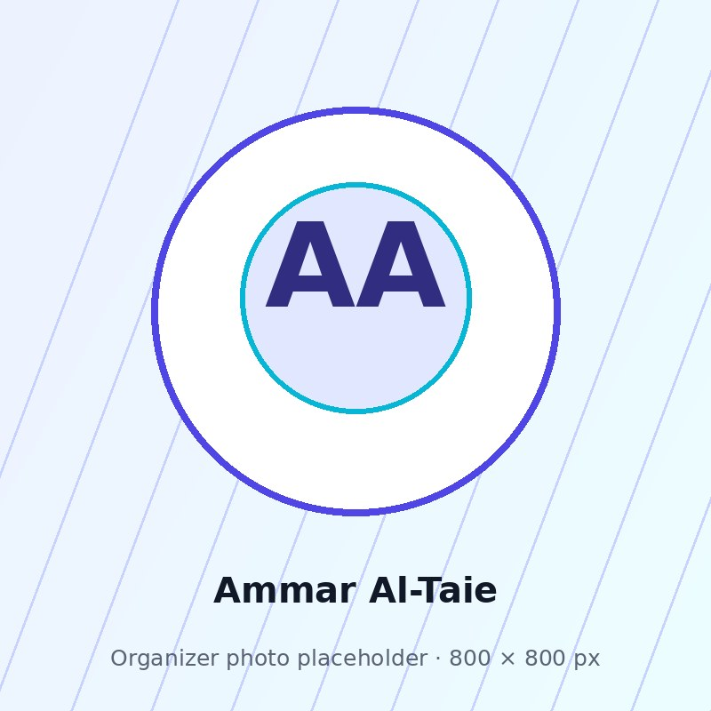
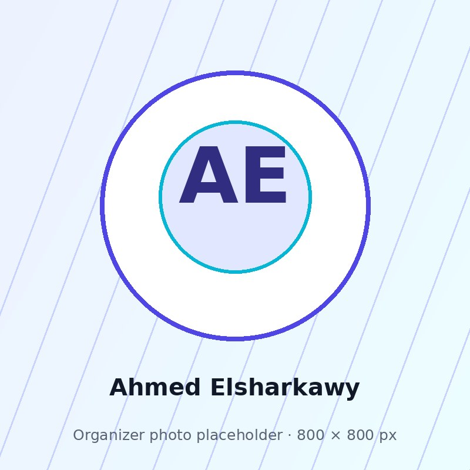
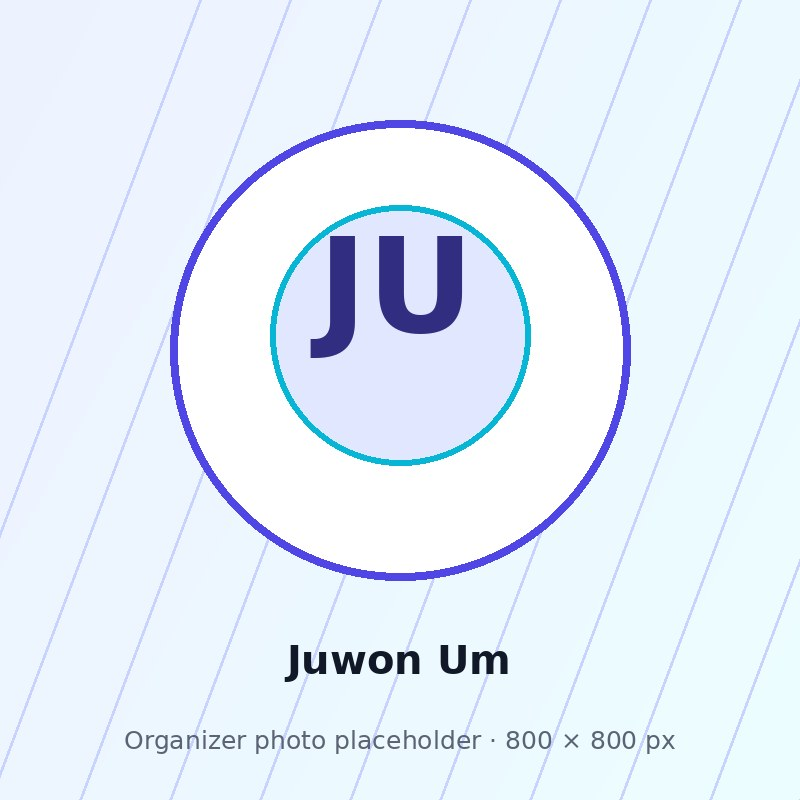
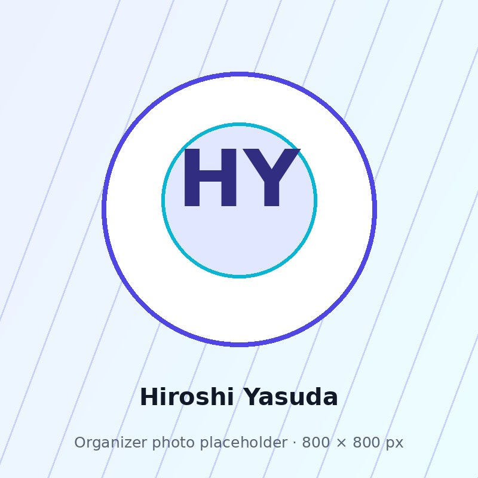

Motion-coupled XR
Virtual content aligns with real-world motion, helping preserve grounding and comfort while keeping experiences tied to the user’s actual trajectory.
IEEE ISMAR 2026 Workshop · Bari, Italy · October 5 or 6, 2026
XR for Walking, Driving, and Everyday Mobility
Overview
Extended Reality is increasingly used by pedestrians, drivers, passengers, cyclists, and transit riders, yet many XR systems are still designed and evaluated around the assumption of a seated user in a controlled indoor scene.
XRWay’26 brings together researchers and practitioners working at the intersection of XR and everyday mobility: on foot, in vehicles, on public transit, and in other real-world settings where physical motion, attention, safety, accessibility, and social context matter.
Guiding theme
Virtual content aligns with real-world motion, helping preserve grounding and comfort while keeping experiences tied to the user’s actual trajectory.
Virtual content departs from physical motion, expanding expressive and spatial possibilities while introducing perceptual, safety, and design challenges.
The workshop uses this design continuum to connect work on walking, running, cycling, driving, riding, commuting, and in-the-wild XR.
Topics of interest
Locomotion-aware content, rendering, and interaction for users on foot, bicycles, and personal-transport platforms.
Interfaces for drivers, passengers, and public-transit riders, including navigation, productivity, entertainment, and assistive use.
Outdoor authoring, streaming, and generative XR content that matches users’ surroundings.
Sensory conflict, cybersickness mitigation, and synchronization or de-synchronization between virtual content and real motion.
Attention, hazard awareness, trust, situational awareness, inclusive interaction, and context-adaptive interfaces.
Wearable, robotic, haptic, thermal, airflow, and motion feedback for ambulatory and in-vehicle XR.
Everyday use, privacy, social acceptability, ethics, and continuous cognitive or physical augmentation.
Empirical studies, field deployments, datasets, benchmarks, and evaluation methods for mobile XR.
Call for papers
Track A
Mature research contributions, evaluated systems, empirical studies, technical methods, datasets, benchmarks, or design frameworks for XR in mobile, vehicular, or everyday contexts.
Track B
Provocative positions, early-stage projects, negative results, open challenges, methods papers, or work-in-progress reports that can seed discussion at the workshop.
Track C
Reports on field deployments, design cases, prototypes, toolkits, or lightweight AR/MR demos suitable for the walk-and-talk session near the conference venue.
Track D
For valuable ISMAR 2026 submissions that were not accepted but can spark productive workshop discussion around XR in motion.
Submissions must be strictly formatted according to the IEEE Computer Society VGTC conference style, as described in the Formatting Guidelines for VGTC Conference Style Papers. Use the vgtc_conference_latex or vgtc_conference_word template for your submission. Do not use the “TVCG journal track template” for TVCG Special Issues. Papers using the wrong style or template may be desk-rejected.
The workshop’s papers will be published in ISMAR 2026 Adjunct proceedings and IEEE Xplore. Accepted papers should be formatted using the IEEE Computer Society VGTC conference format and will be subject to the registration and publication processing policy of ISMAR 2026. Publication status for ISMAR Redirect Track papers will follow ISMAR 2026 Adjunct proceedings and publication policies.
Tracks A–C will undergo single-blind peer review. ISMAR Redirect Track submissions will be assessed by a lightweight jury of organizers and/or senior PC members based on the submitted manuscript and the official reviews made available to authors. The attached review package is used only for workshop assessment and will not be published. At least one author of each accepted paper must register and present on-site at ISMAR 2026 in Bari, Italy.
Important dates
All deadlines are in 2026. The workshop date is expected to be October 5 or 6 and will be finalized with the ISMAR 2026 schedule.
Add tentative workshop date to Google CalendarPreliminary full-day program
If submission volume warrants, the program may be compressed into a half-day format while retaining the demo component.
Organizers

Gwangju Institute of Science and Technology
Gwangbin Kim is a Ph.D. candidate in AI at GIST, where he received his M.S. in Robotics and B.S. in Mechanical Engineering. His research focuses on human-centered AI for automated vehicles — including explainability, trust, multi-user interactions, and adversarial robustness — alongside multisensory XR systems combining haptic, thermal, and motion feedback. His work has been recognized with the ACM IMWUT Distinguished Paper Award at UbiComp/ISWC’24, the Best Demo Award at ISMAR’25, and the Best Demo Award (People's) at UIST’25.

KAIST
Ammar Al-Taie is a postdoctoral research fellow at WIT Lab, KAIST. He studies how people interact with devices while on the move, including while running, cycling, or driving. His work explores road safety, media consumption, sports HCI, and evaluation of XR interfaces in mobile use cases.

DGIST & GIST
Ahmed Elsharkawy is a postdoctoral fellow in the Department of AI Convergence at GIST and the DGIST InnoCORE Research Group for Bio-Embodied Physical AI. His research spans HCI/HRI, VR/XR, physical AI, and human-centered intelligent systems, with a focus on XR experiences for mobile and embodied contexts.

Gwangju Institute of Science and Technology
Juwon Um is a Ph.D. student at GIST affiliated with the Human-Centered Intelligent Systems Lab. Her research lies in HCI, with a focus on VR, embodied interaction, and proprioceptive feedback for immersive VR experiences. Her work has been presented at leading HCI and XR venues including CHI, ISMAR, and UbiComp.
Gwangju Institute of Science and Technology
Dohyeon Yeo is a Ph.D. student at GIST researching human-centered physical interfaces, XR, and multisensory feedback for intelligent mobility systems. His work focuses on interactive systems and experimental testbeds for studying how people experience and physically interact with intelligent vehicles and mobility technologies.
MIT CSAIL
Joseph DelPreto is a Research Scientist at MIT CSAIL. His research focuses on machine learning pipelines, smart devices, and multimodal datasets that improve how we interact with machines and nature, including wearable and deployable sensors for human-robot collaboration, robot learning, interactive AI tools, healthcare, and environmental science.

Toyota Research Institute
Hiroshi Yasuda is a staff HCI researcher and HMI research tech lead at the Human Interactive Driving Division at Toyota Research Institute. His research interests include HMIs for advanced safety systems and applications of augmented and mixed reality for vehicles.
KAIST
Ian Oakley is a full professor in the School of Electrical Engineering at KAIST, where he directs the Wearable and Interactive Technology Lab. His research explores wearable, mobile, and XR interaction, including touch and motion sensing, haptics, biometric authentication, and intelligent interactive systems.
Gwangju Institute of Science and Technology
SeungJun Kim is a full professor in the Department of AI Convergence at GIST, where he has directed HCIS Laboratory since 2017. His research bridges HCI and AI for human-centered physical systems, with a focus on actuated XR systems, Automotive UI/UX, and sensory intelligence for cognition and motor skills.
Supported by
The workshop is supported by the PAIR-HCI Center at GIST.
Workshop email
For workshop inquiries, contact xrontheway@gmail.com.